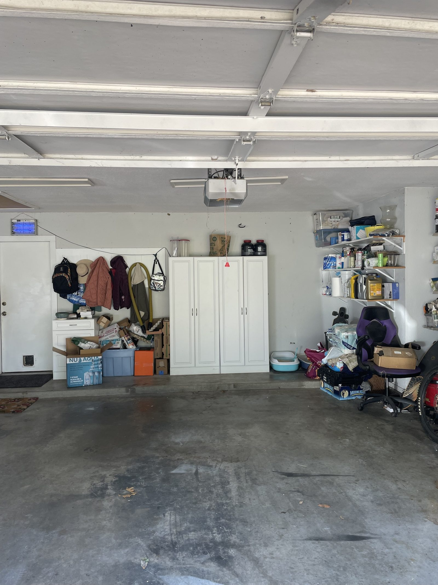
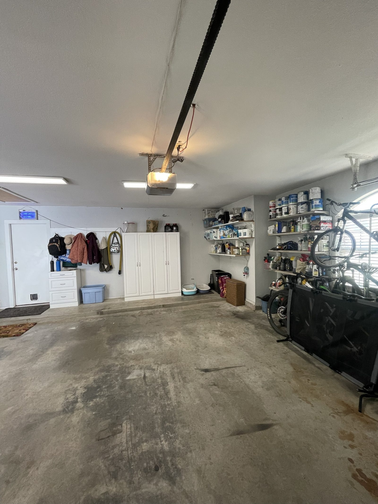
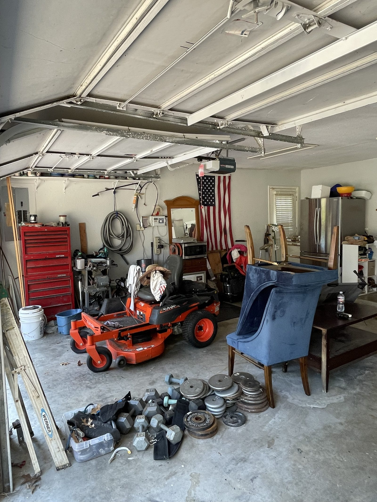
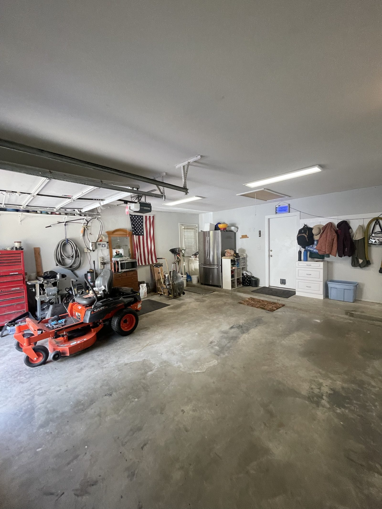

Can't remember the last time you actually parked in there? Bikes leaning on boxes, totes stacked on totes, and the one tool you need buried somewhere in the back — that's usually where it starts.
Left alone, it just keeps piling up. More stuff gets shoved on top of stuff, and before long the garage turns into the one room nobody wants to open. I'll help you clear it out, sort what's actually worth keeping, and set up a system that keeps it that way.




It's not only about how it looks. When you can't find what you need, you end up buying a second one. When there's no clear floor space, the small jobs around the house keep getting put off. And once the piles get high enough, they turn into a real trip hazard — especially with kids or pets running through.
A little organization goes a long way toward getting your garage — and your weekends — back.
Full Garage Organization means clearing everything out, sorting what stays and what goes, and setting up a real system — shelving, bins, labeled zones — built around how your family actually uses the space.
I measure first, plan a layout that fits your garage instead of a one-size-fits-all kit, and put everything back where it'll actually stay.
Every garage is different, so every job starts with a look at yours. Here's what's usually part of the process.
We go through everything together, sort what's staying, donating, or heading to the curb — no judgment, just progress.
Wall-mounted shelving, cabinets, and bins sized to fit your garage and what you actually need to store — not a generic kit.
Get bins, seasonal decorations, and rarely-used gear up and off the floor so you finally get your parking space back.
Every category gets its own labeled spot, so putting things away is just as easy as finding them again.
I'll set up a system that makes swapping holiday decorations, sports gear, or yard tools in and out simple, twice a year.
Not keeping it? I'll haul it off so you don't have to make that dump run yourself.
I've spent years working in service industries around Tulsa, and one thing stuck with me from working alongside some of the best in the business: great service isn't complicated. It's showing up on time, doing the job thoroughly, and treating every home like it's your own.
I started Tulsa Garage Organizers because I kept walking into garages that had good bones — they just never had a real system. Not because anyone was lazy, just because nobody ever set them up right. I bring that same honest, no-pressure approach to every home I work in, and I don't leave until the space actually makes sense.
Will Senka — Owner / Garage Organization Specialist
Skiatook, Collinsville, Owasso, Sperry, Broken Arrow, Bixby, Glenpool, Sand Springs, Catoosa, Jenks, Coweta, and Sapulpa.
If you're anywhere in the Tulsa area and ready to get your garage back, I'm happy to help.